A step-by-step guide to running the journal: handling submissions and peer review, publishing issues, supporting authors, and keeping the website up to date.
{{SITE_HOST}}
Your administrator login
Website
{{SITE}}
Username
{{USER}}
Password
{{PASS}}
Sign in with Login at the top right of the website. This account can manage everything on the site. You can change the password at any time; chapter 12 shows how.
Orange numbered circles point to parts of the screen. The list under each screenshot explains them in the same order.
About the sample content
The screenshots show sample articles, authors and a sample journal name. Your website shows your own journal, articles and people in the same places.
01
CHAPTER 01
Your website at a glance
Your journal website is built on Open Journal Systems (OJS) 3.5, the software used by tens of thousands of scholarly journals. It has been given its own design, a simpler admin panel, clickable references and author pages.
What the website does
Feature
What it means for you
Online submission
Authors register and send manuscripts through a guided form. You receive them in the admin panel.
Peer review
Double-anonymous review with invitations, deadlines and automatic reminders to reviewers.
Issues and archive
Articles are published in issues (volume, number, year) with a cover. All past issues stay in the archive.
PDF and HTML full text
Every article has a PDF that opens in the browser. Optionally, the full text can also be shown on the article page.
Clickable references
Citations such as [1] or (Smith, 2020) link to the reference list and show the reference when the reader points at them.
Author pages
Every published author gets a public page with photo, affiliation, ORCID, biography and articles.
Identifiers and indexing
DOIs through Crossref, ORCID iDs, Google Scholar metadata and OAI-PMH, which indexing services use to harvest your articles.
Email notifications
Authors, reviewers and editors receive emails automatically at each step.
Who does what
Role
What they can do
Administrator (you)
Everything, including site-wide settings. This is the account on the cover.
Journal manager
All submissions, issues, settings, users and statistics of the journal.
Journal editor
The editor-in-chief: all submissions and editorial decisions.
Section editor
Only the submissions assigned to them.
Reviewer
Their review invitations and review forms.
Author
Their own submissions, messages from the editors and their public profile.
Reader
Anyone can read and download articles without an account.
How an article gets published
Every article passes through the same six steps. You will see these colours throughout the admin panel.
SubmissionAn editor checks scope and format.
Peer reviewReviewers assess the manuscript.
CopyeditingLanguage and style are polished.
ProductionThe final PDF (and HTML) is prepared.
ScheduledThe article is placed in an issue.
PublishedThe issue goes live on the website.
Authors submit; editors publish. An article only appears on the website after an editor publishes the issue it belongs to.
02
CHAPTER 02
Signing in and the Home page
Everything you manage happens in the admin panel. You reach it by signing in on the website.
Sign in
Open {{SITE}} and click Login at the top right.
Enter your username and password (see the cover) and click Login.
You arrive on the Home page of the admin panel.
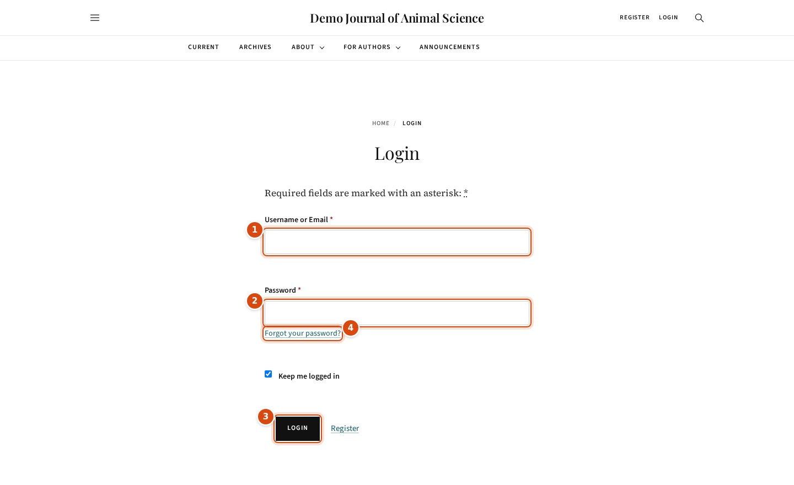
Username (or your email address).
Password.
The Login button.
Forgot your password? sends a reset link to your email.
Getting back to the admin panel
When you are on the public website and signed in, open your username at the top right and choose Dashboard. The admin panel also works on a phone; the menu then sits above the page.
The Home page
Home shows what needs your attention today. Every number is a link that opens the matching list of submissions.
Needs your attention. New submissions without an editor, submissions ready for a decision, revisions from authors and overdue reviews.
Publishing pipeline. How many submissions are in each of the six steps.
Recent submissions with their current status. Click a title to open it.
Current issue, with links to view it on the website or manage issues.
Shortcuts to common tasks.
View website opens the public site in a new tab.
New submission lets you submit a manuscript on someone's behalf.
03
CHAPTER 03
The public website
This is what readers, authors and indexing services see at {{SITE_HOST}}. Everything on it comes from the admin panel, so you can change it without any technical help.
Home page
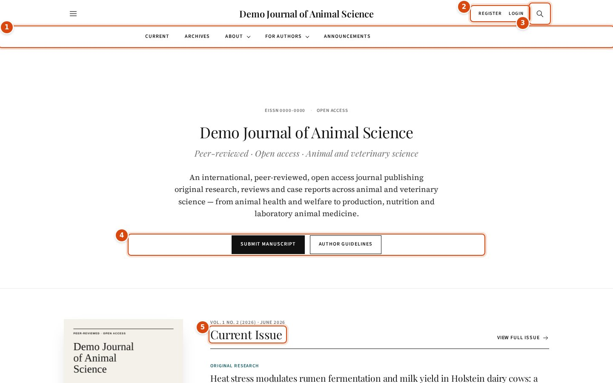
Main menu: Current issue, Archives, About, For Authors and Announcements. You edit it in chapter 10.
Register and Login.
Search across all articles.
Buttons that lead authors to submit a manuscript or read the guidelines.
The current issue with its cover and articles. Below it: latest articles, aims and scope, announcements and indexing logos.
Article page
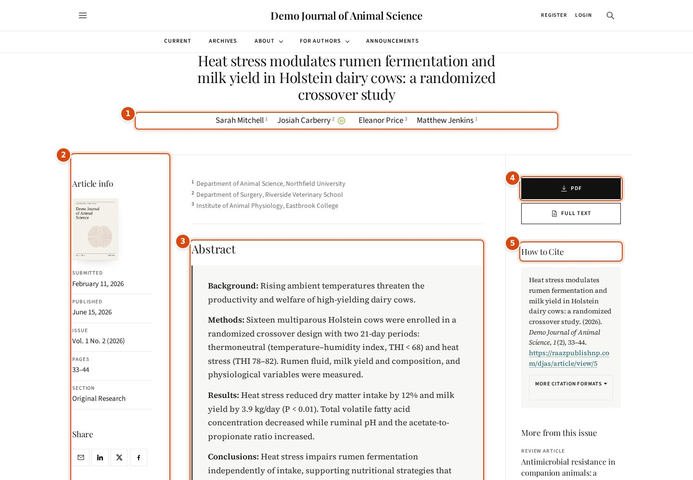
Authors. Each name links to the author's page; ORCID iDs show as a green icon.
Article information: dates, issue, pages and section.
Abstract, followed by keywords, the full text (if provided) and the reference list.
Download the PDF or jump to the full text.
A ready-made citation in several styles (APA, Vancouver, Harvard and more).
Clickable citations
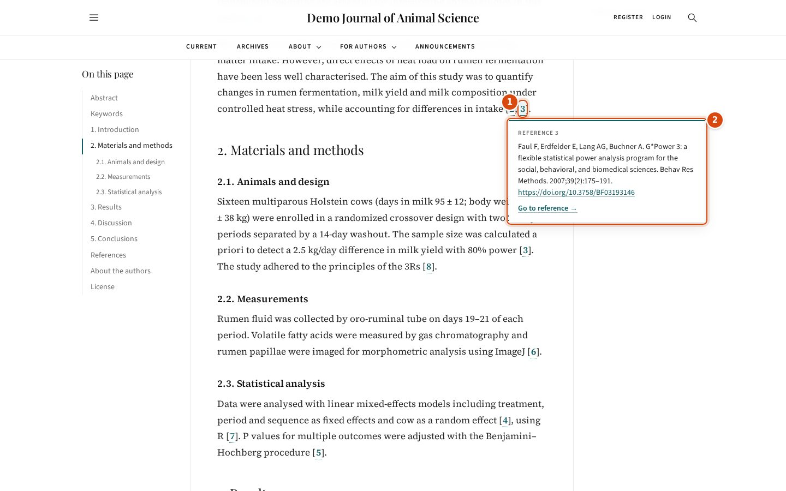
A citation in the text. Pointing at it (or tapping it on a phone)…
…shows the full reference, with its DOI link. On this page on the left is built automatically from the article's headings.
PDF reader and archive
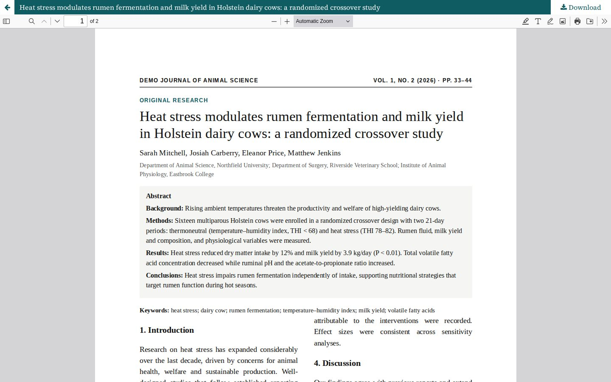
PDFs open inside the website. Download is at the top right.
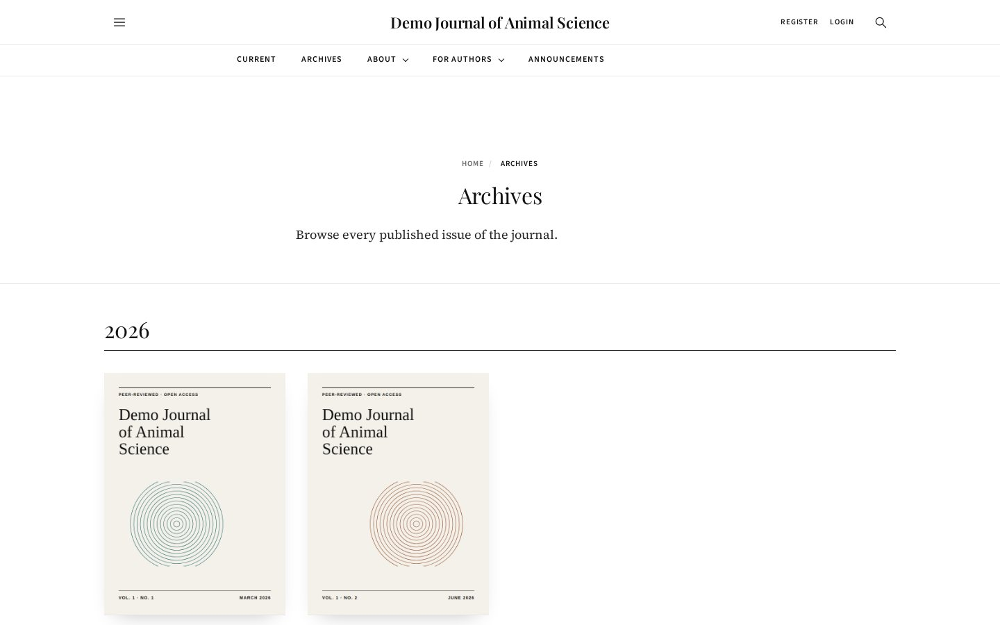
Archives lists every published issue with its cover.
Authors and the editorial team
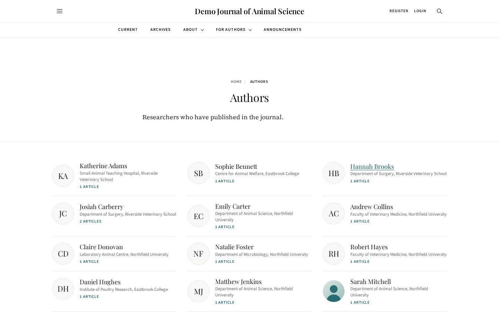
Authors (under About) lists everyone who has published in the journal.
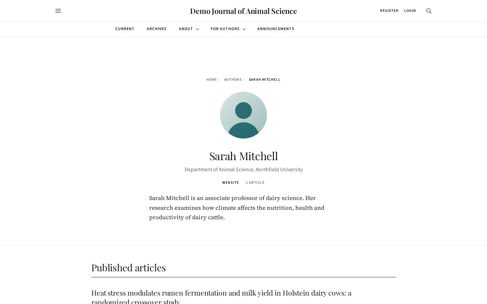
Each author's page: photo, affiliation, website, biography and articles. Authors keep it up to date themselves (chapter 8).
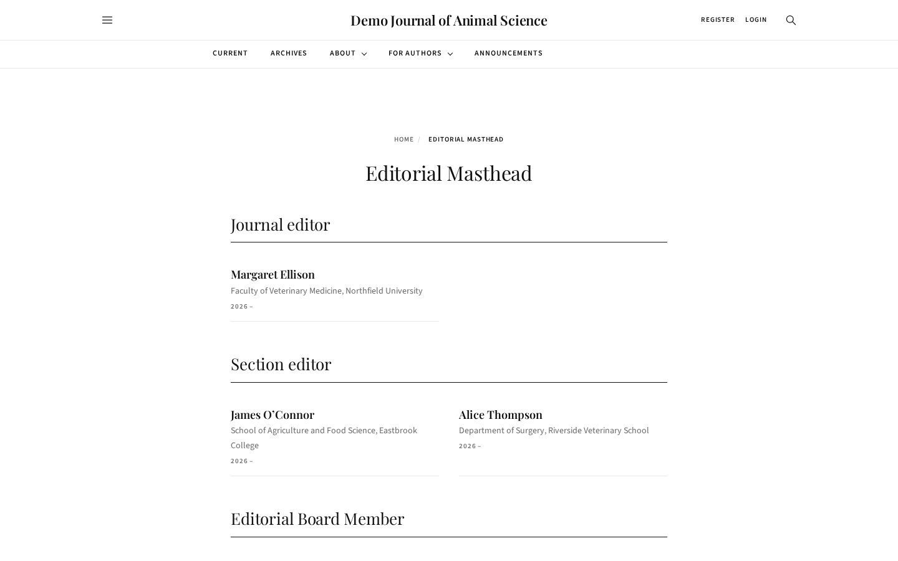
Editorial Team (under About) lists the editors and board members with their affiliations. Chapter 9 explains who appears here.
04
CHAPTER 04
Receiving new submissions
When an author submits a manuscript, you receive an email and it appears under New submissions on Home. The next step is a first check by an editor.
The Submissions list
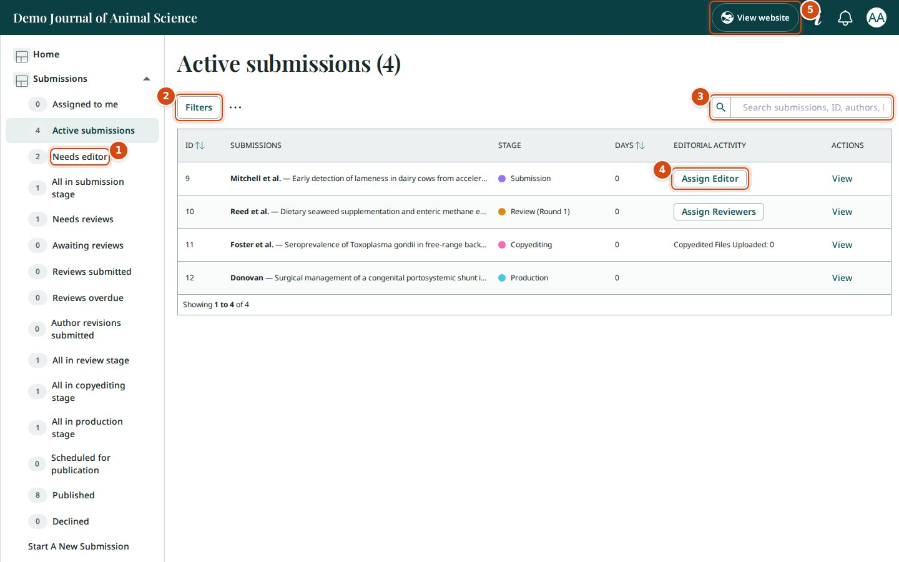
Ready-made lists with counts: Needs editor, Awaiting reviews, Reviews overdue, each stage, Published and more.
Filters: by section, assigned editor, issue or days since last activity.
Search by title, author or ID.
Assign Editor gives the submission to an editor.
View opens the submission.
Checking a new submission
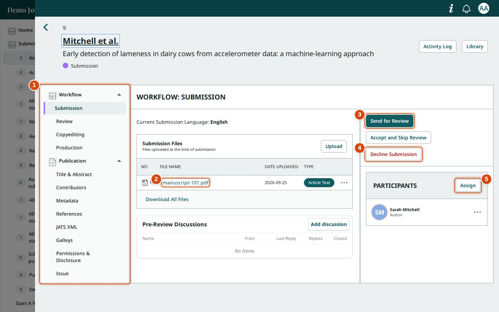
The submission's menu. Workflow holds the steps (Submission, Review, Copyediting, Production); Publication holds the article details (title and abstract, contributors, metadata, references, galleys, issue).
The files the author uploaded. Click a file to download it.
Send for Review moves it to peer review (chapter 5).
Decline Submission if it is out of scope. The author is notified by email.
Assign adds an editor (or other participant) to this submission.
Open the submission from New submissions on Home or from Submissions › Needs editor.
Under Participants, click Assign and choose the handling editor.
Check the manuscript against the journal's scope and author guidelines. Make sure the author's name is not inside the manuscript file, because review is anonymous.
Click Send for Review, Accept and Skip Review (for editorials, for example) or Decline Submission.
Discussions
Use Add discussion on any stage to message the author or other participants. Messages are sent by email and kept with the submission.
05
CHAPTER 05
Peer review
Reviewers are invited by email, respond online and submit their review through a form. You then record a decision.
Recording a decision
Every decision (Send for Review, Accept, Request Revisions, Decline) opens the same kind of page: first an email to the author, then the files to carry forward.
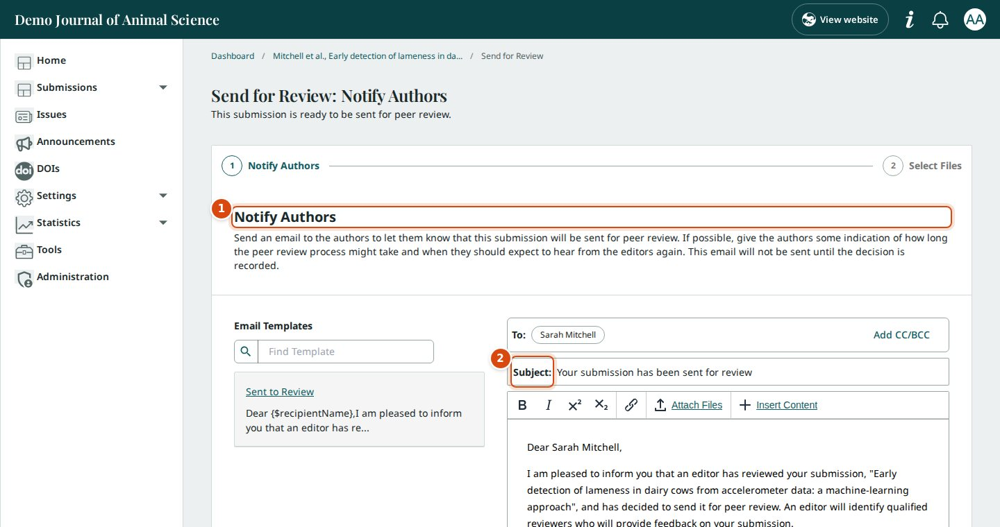
The steps of the decision: notify the authors, then select the files.
The email to the author, pre-written from a template. Edit it freely; it is only sent when you click Record Decision.
Anonymous review
Reviewers and authors do not see each other's names. When you share reviews with the author, only the comments meant for the author are included.
The Review stage
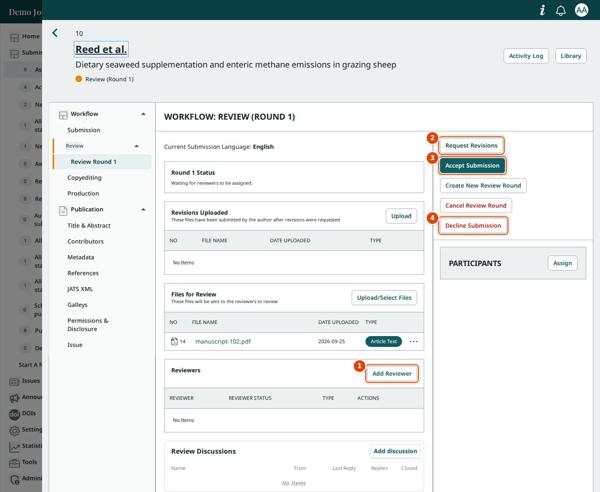
Add Reviewer: choose a reviewer or create a new one, set the deadlines and send the invitation.
Request Revisions asks the author for changes.
Accept Submission moves it to copyediting.
Decline Submission.
Click Add Reviewer. Search your reviewers by name or interest, or create a new reviewer account.
Check the deadlines. By default reviewers have 7 days to respond and 21 days to complete the review. Reminders are sent automatically.
Follow progress in the Reviewers panel; you receive an email when a review is submitted.
When enough reviews are in, read them and record your decision. If you request revisions, the author uploads a revised file on the same page, and you can start a new review round with Create New Review Round.
06
CHAPTER 06
Copyediting and production
After acceptance, the manuscript is polished and turned into the files readers will see: a PDF and, optionally, an HTML full text.
Copyediting
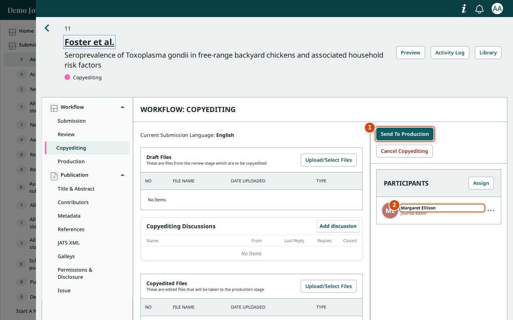
Send To Production once the copyedited file is ready.
Participants: assign a copyeditor here, or upload the edited file yourself under Copyedited Files.
Production: galleys
A galley is a file readers see on the article page. Every article needs a PDF galley; an HTML galley is optional and shows the full text on the page, with clickable citations.
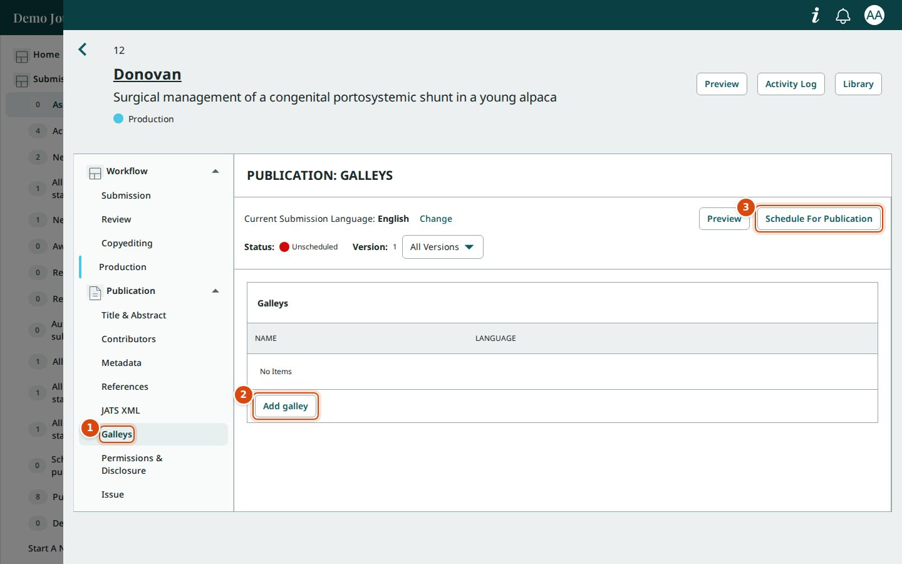
Publication › Galleys in the submission's menu.
Add galley: label it PDF (or Full Text for HTML) and upload the file.
Schedule For Publication places the article in an issue (chapter 7).
Use a text-based PDF (not a scan) with the title and authors on the first page. Google Scholar needs this.
Before scheduling, check each part of Publication: Title & Abstract, Contributors (with ORCID iDs), Metadata (keywords), References, Permissions & Disclosure and Issue.
Click Schedule For Publication and choose the issue.
References
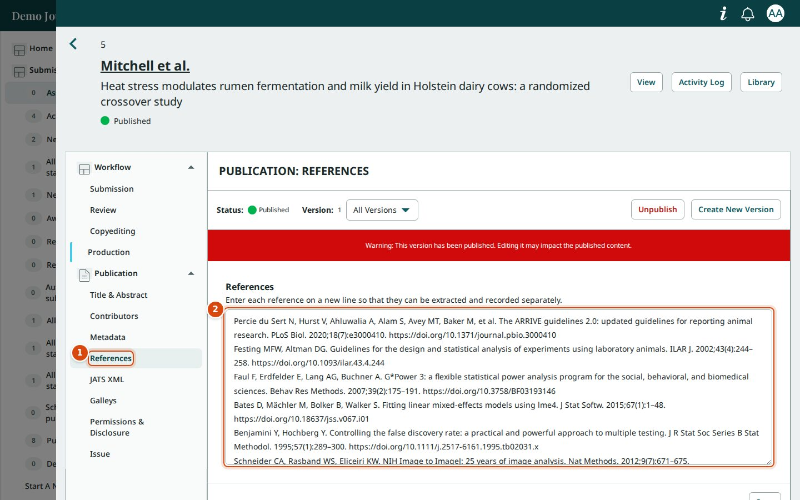
Publication › References.
Paste the reference list, one reference per line. Include the DOI whenever there is one (for example https://doi.org/10.1000/xyz123).
The website then numbers the references, links every DOI and web address, and adds Google Scholar and Crossref look-up links to each reference. Keywords become search links automatically.
HTML full text (optional)
To show the full text on the article page, add a galley labelled Full Text with an HTML file. Keep the HTML simple:
Use level-2 and level-3 headings (1. Introduction, 2.1 Animals). They build the On this page menu automatically.
Write citations as [1], [1, 2], [3–5] or (Smith et al., 2020). They become clickable automatically.
Upload images as additional files of the same galley, with the same file names used in the HTML.
From Microsoft Word: File › Save as › Web Page, Filtered, then delete the title, author list and abstract from the file, because the page already shows them.
07
CHAPTER 07
Issues: create and publish
Articles go live together when you publish their issue. Prepare the next issue in advance, schedule articles into it, then publish it with one click.
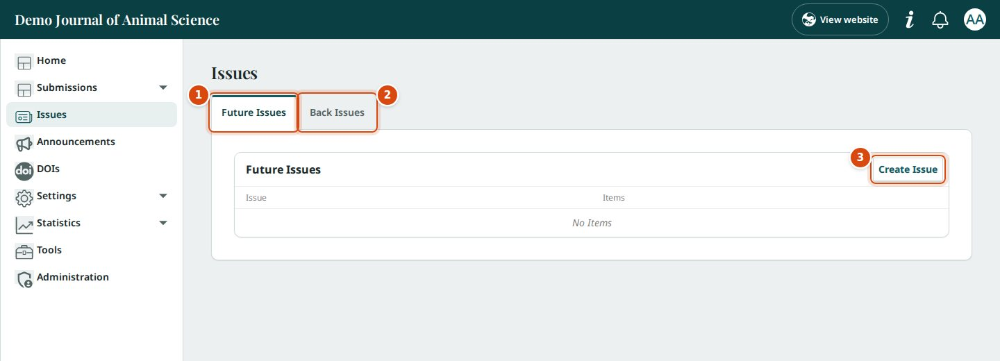
Future Issues: issues you are preparing.
Back Issues: issues already published.
Create Issue.
Create an issue
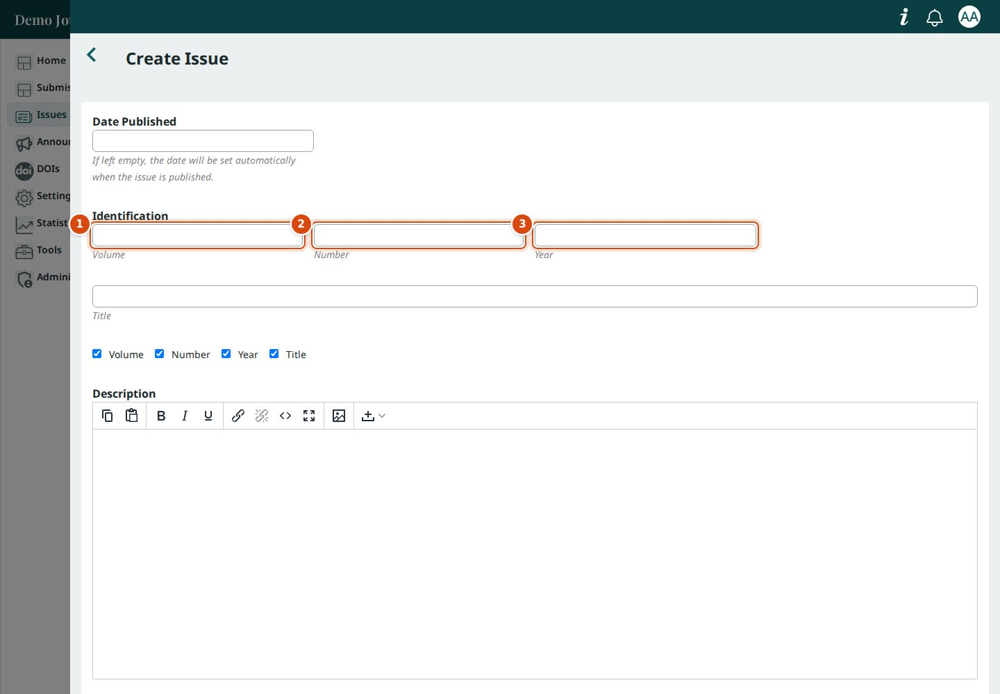
Volume.
Number.
Year.
Cover image: portrait, about 600 × 800 pixels. It appears on the home page, the issue page, the archive and article pages.
Save.
Publish an issue
Schedule each article into the issue from its Production stage (chapter 6).
Go to Issues › Future Issues and open the issue. Check the table of contents and the order of the articles.
Click Publish Issue. All its articles go online at once, DOIs are registered (if set up, chapter 11) and the issue becomes the current issue on the home page.
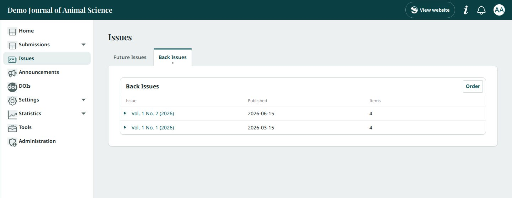
Back Issues: published issues. Open an issue to edit its details, add an issue PDF or unpublish it.
Correcting a published article
Open the article and click Create New Version in Publication. Make your changes and publish the new version; the website keeps the earlier version available for transparency.
08
CHAPTER 08
Authors and the author area
Authors have their own area in the admin panel, where they submit manuscripts, follow them and keep their public profile up to date. This chapter shows what they see, so you can guide them.
Registering and submitting
The author clicks Register on the website, fills in the form and confirms their email address.
They click Submit Manuscript on the home page (or New submission in their area).
They enter the title, choose a section and confirm the submission checklist, then go through Details (abstract, keywords, references), Upload Files, Contributors, For the Editors and Review, and submit.
They can save and finish later; unfinished submissions are kept as drafts.
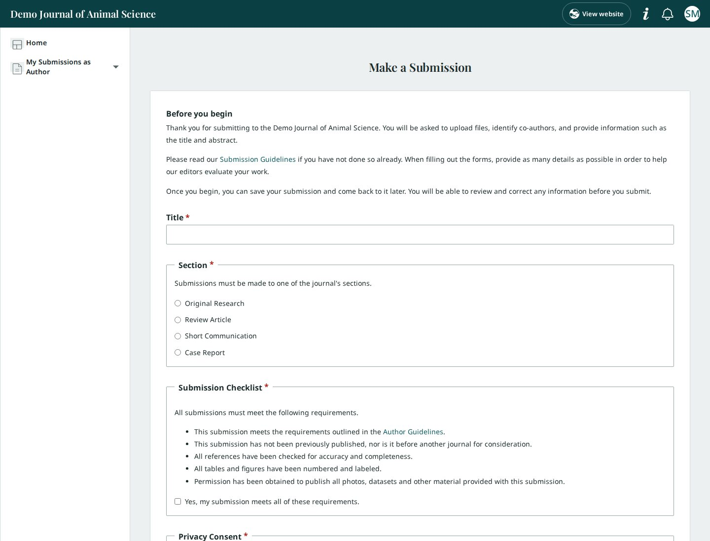
The first page of the submission form. The instructions and checklist come from your settings (chapter 10).
The author's Home page
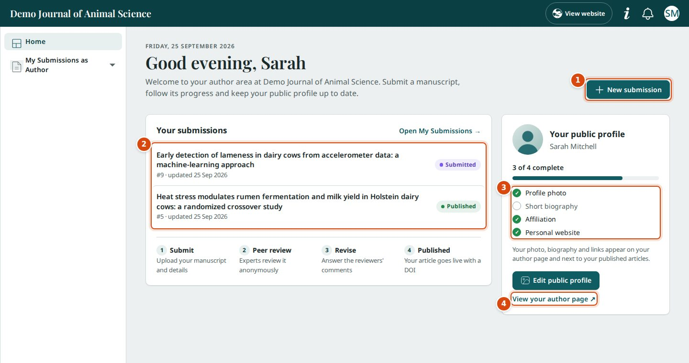
New submission.
Their submissions with a plain status: Draft, Submitted, In review, Copyediting, Production, Scheduled, Published or Declined.
A checklist for their public profile: photo, biography, affiliation, ORCID iD and website.
A link to their public author page (once they have published).
Photo and biography
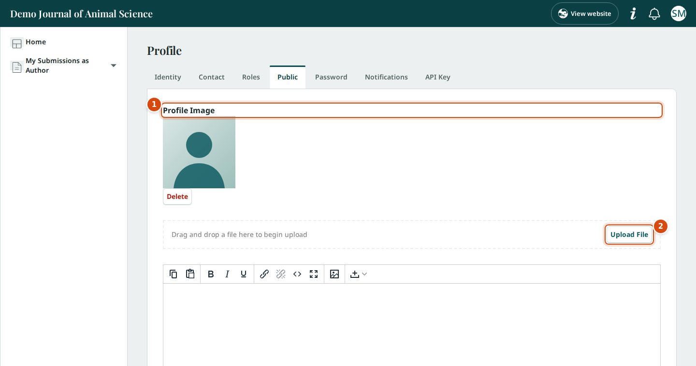
In Profile › Public, the profile image…
…is uploaded with Upload File (a square photo of at least 150 × 150 pixels). The biography and website go below it.
How author pages are matched
An author's page collects all their published articles. Articles are matched by ORCID iD, or otherwise by email address. The photo and biography come from the author's account with the same email address. Ask authors to add their ORCID iD to every submission.
09
CHAPTER 09
Users, roles and the editorial team
Everyone who uses the admin panel has an account and one or more roles. You manage them in Settings › Users & Roles.
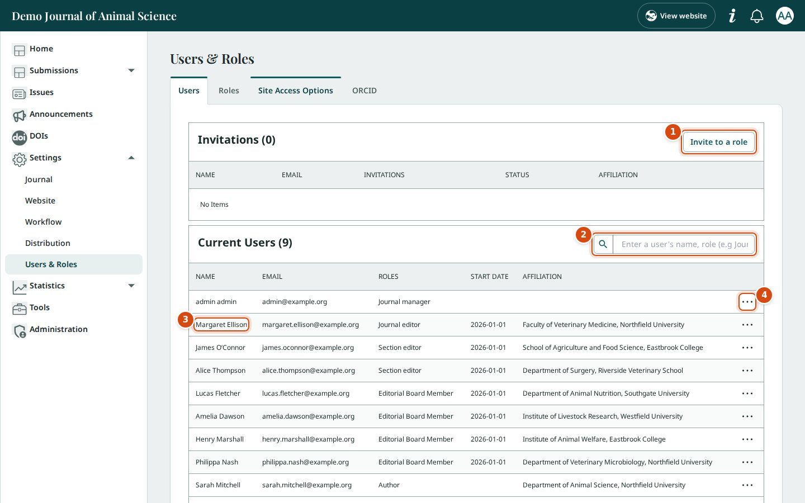
Invite to a role: enter a person's email address and choose a role (for example Section editor or Reviewer). They receive an invitation to accept.
Search users by name, email or role.
Each user with their roles, start date and affiliation.
The ⋯ menu: edit the user's details and roles, or email them.
Roles
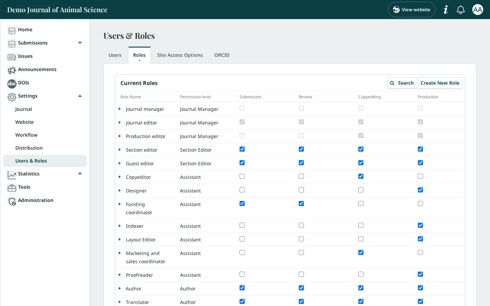
The Roles tab lists each role, its permission level and the stages it can access. The default roles suit most journals.
The editorial team page
The Editorial Team page on the website lists people in the editorial roles (Journal editor, Section editor, Editorial Board Member), with their affiliation. To keep it up to date:
Give each board member an account with the right role (invite them, as above).
Make sure their profile has their affiliation and, ideally, their ORCID iD.
Set the order of the roles on the page in Settings › Website › Appearance › Editorial Masthead.
10
CHAPTER 10
Website settings
You can change the look and content of the website yourself. Most settings are under Settings › Website and Settings › Journal. Click Save after each change.
Accent colour for links, buttons and highlights. The admin panel uses it too.
Home page sections to show or hide.
Tagline under the journal name on the home page.
Indexing logos, one per line: Name | logo address | link.
Save.
The logo, favicon and footer text are in Settings › Website › Appearance › Setup.
Menus
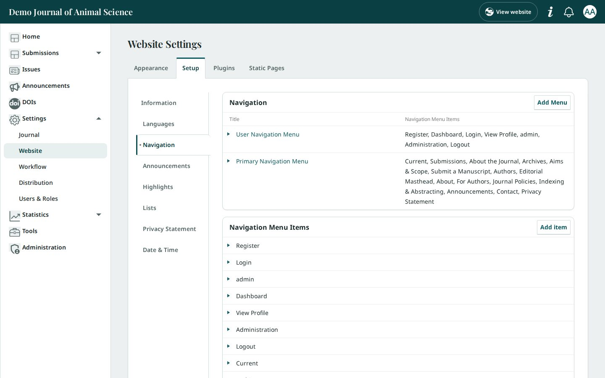
Settings › Website › Setup › Navigation. Open Primary Navigation Menu to add, remove or reorder the items in the website's main menu; drag items to nest them under About or For Authors.
Pages such as Aims & Scope or Journal Policies
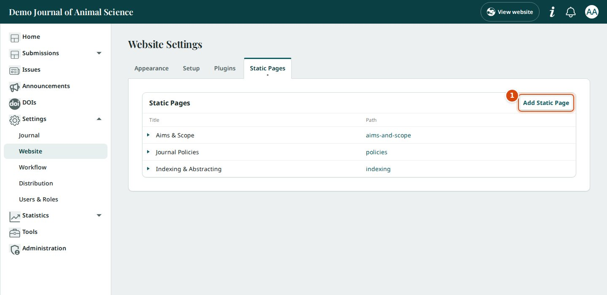
Settings › Website › Static Pages: Add Static Page creates a page with its own address (for example /policies). Add it to a menu to link it.
Announcements
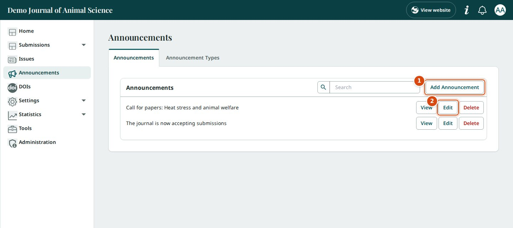
Add Announcement: news such as a call for papers. The latest ones appear on the home page.
Edit or delete existing announcements.
Journal information
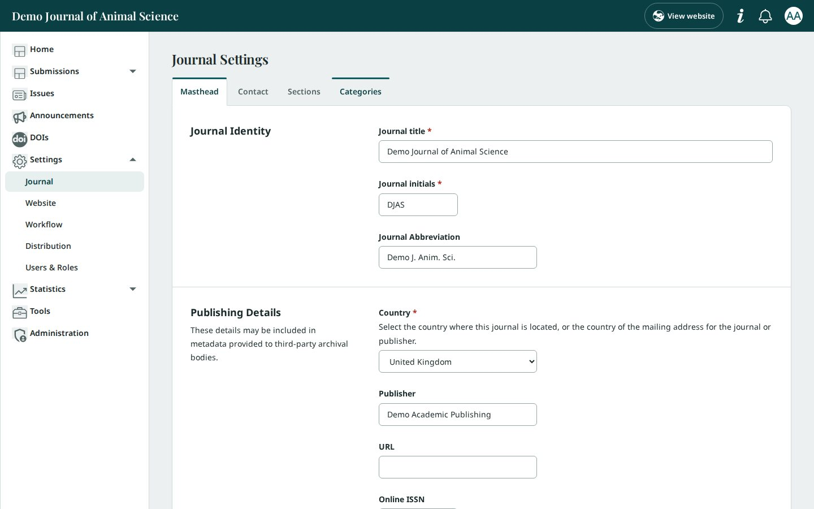
Settings › Journal: journal name, abbreviation, ISSN, publisher, the About the Journal text (Masthead), contact details (Contact) and the journal's sections (Sections).
Emails and author guidelines
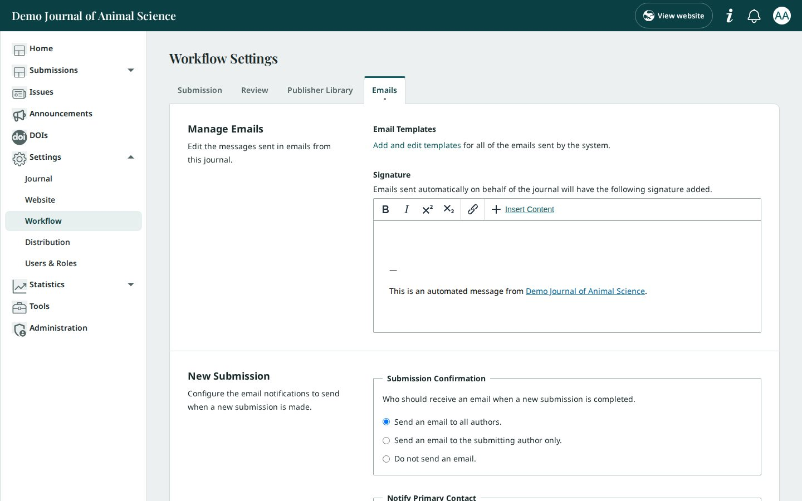
Settings › Workflow › Emails: the signature on every email and the text of each automatic email (Manage Emails).
To change…
Go to
Author guidelines and the submission checklist
Settings › Workflow › Submission
Review deadlines, reminders and review forms
Settings › Workflow › Review
Licence and copyright
Settings › Distribution › License
Privacy statement
Settings › Website › Setup › Privacy Statement
Date format
Settings › Website › Setup › Date & Time
11
CHAPTER 11
DOIs and statistics
A DOI is a permanent link to an article, required by most indexing services. Statistics show how often your articles are read and downloaded.
DOIs
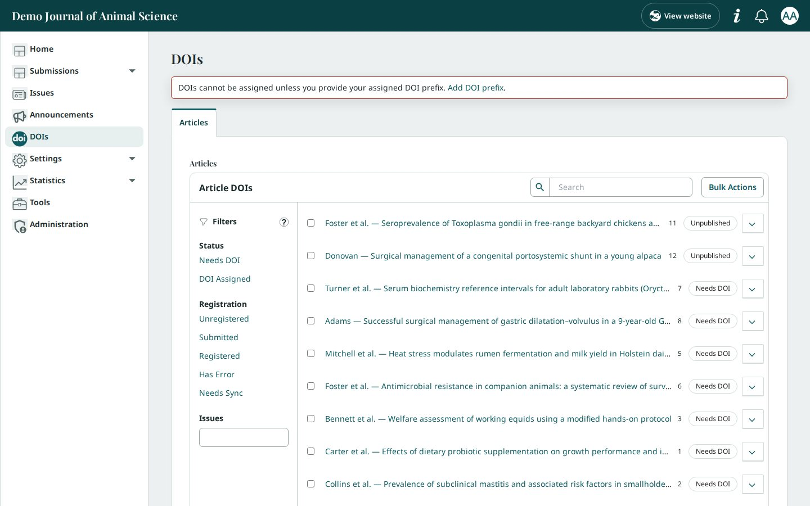
The DOIs page (left menu) lists every article and issue with its DOI and registration status. From here you can assign, register or update DOIs in bulk.
Become a member of Crossref (crossref.org) to receive your DOI prefix and login.
Enter the prefix in Settings › Distribution › DOIs. DOIs are then assigned automatically when articles are published.
Enter your Crossref login under Registration on the same tab, so DOIs and reference lists are registered automatically.
Statistics
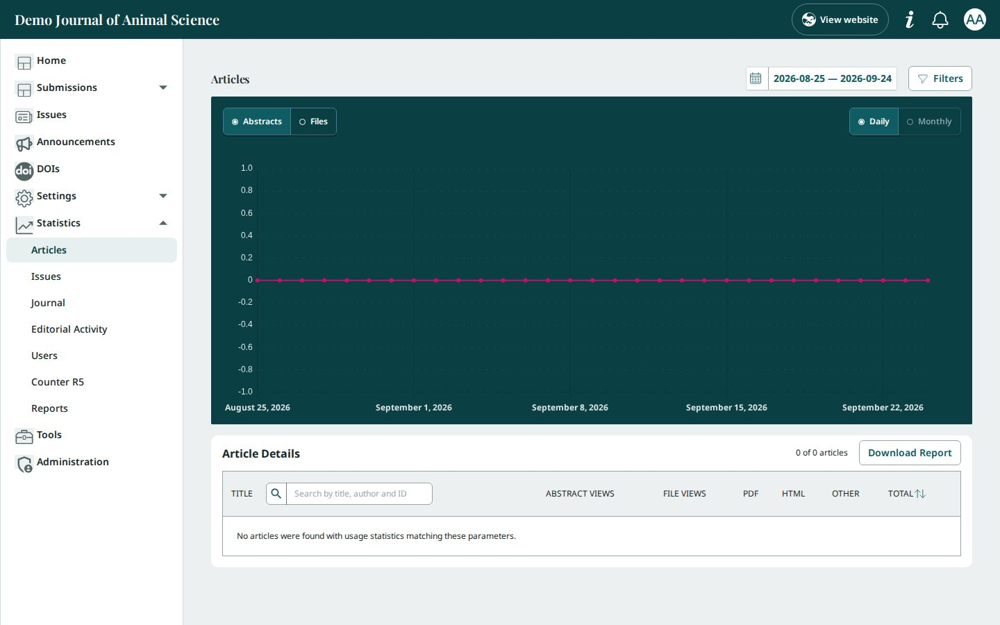
Statistics › Articles: abstract views and file downloads over time, per article, with filters and a downloadable report. Editorial Activity shows submission numbers, acceptance rates and review times.
12
CHAPTER 12
Your password and account
Your login is on the cover of this guide. You can change the password whenever you like; we recommend doing so after your first sign-in and keeping it in a password manager.
Change your password
Click your initials at the top right of the admin panel and choose Edit Profile.
Open the Password tab.
Enter your current password, then the new password twice, and click Save.
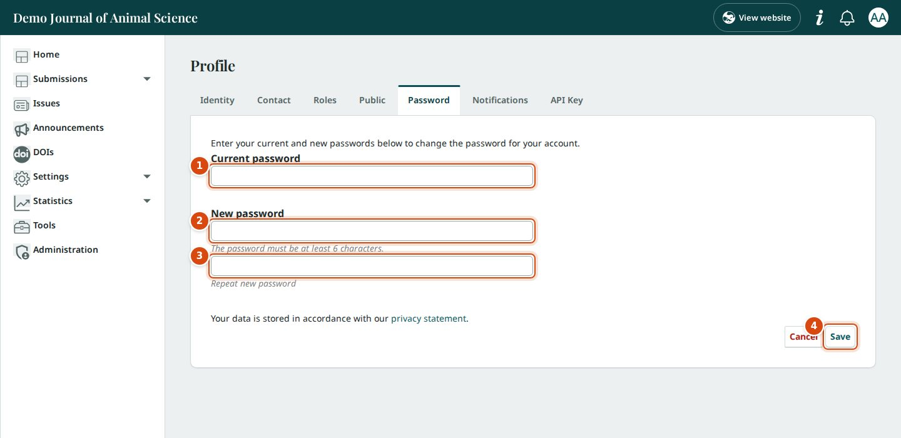
Current password.
New password (at least 6 characters; longer is safer).
Repeat the new password.
Save.
The same profile has your name, email address, affiliation and notification preferences. If you forget your password, use Forgot your password? on the login page; a reset link is sent to your email address.
If a change doesn't appear on the website
The website keeps copies of pages to stay fast. If a change to the settings doesn't show, clear them:
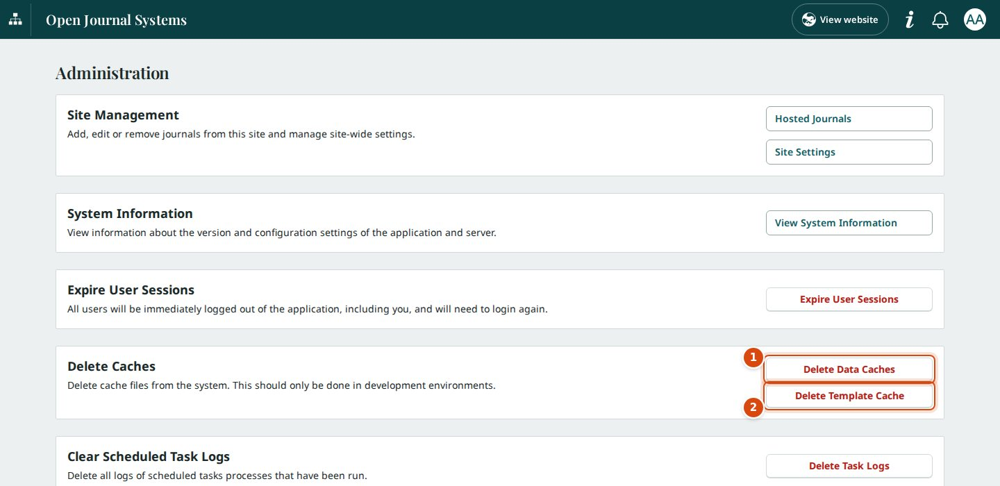
Administration › Delete Data Caches.
Delete Template Cache. Then reload the website page.
Keep your account safe
Use the administrator account for administration only. For day-to-day editorial work, invite each editor with their own account (chapter 9), so everyone signs in with their own name and the activity log shows who did what.
13
CHAPTER 13
Quick reference
Where do I…?
Task
Where
See what needs my attention
Home
Find a submission
Submissions (lists, search and filters)
Assign an editor or reviewer
Open the submission › Assign / Add Reviewer
Accept, request revisions or decline
Open the submission › decision buttons on the right
Upload the final PDF
Open the submission › Publication › Galleys
Add or fix references
Open the submission › Publication › References
Create or publish an issue
Issues
Post news
Announcements
Change colours, home page sections, tagline
Settings › Website › Appearance › Theme
Change the logo or footer
Settings › Website › Appearance › Setup
Edit the main menu
Settings › Website › Setup › Navigation
Add a page (policies, aims & scope…)
Settings › Website › Static Pages
Edit journal name, ISSN, contact
Settings › Journal
Edit author guidelines
Settings › Workflow › Submission
Edit automatic emails
Settings › Workflow › Emails
Invite editors and reviewers
Settings › Users & Roles
DOIs and Crossref
DOIs and Settings › Distribution › DOIs
Readership numbers
Statistics
Change my password
Your initials › Edit Profile › Password
Common questions
Can authors publish their own articles?
No. Authors submit; editors publish after peer review. This is what makes the journal peer-reviewed, and indexing services such as DOAJ and Scopus require it. For sections without review, such as editorials, use Accept and Skip Review.
A change I made doesn't show on the website.
Clear the caches (chapter 12) and reload the page.
An author's photo doesn't appear on their author page.
The photo comes from the author's own account (Profile › Public). The email address in the account must match the one on the article, or the article must have the author's ORCID iD.
A reviewer didn't receive the invitation.
Ask them to check their spam folder. In the Reviewers panel of the submission you can resend the request or email the reviewer directly.
How do I correct a published article?
Open it, click Create New Version in Publication, make the change and publish the new version (chapter 7).
How do I remove the sample content?
The sample articles and people shown in this guide are only for illustration. Your website contains your own journal; add your issues and articles as described in chapters 4 to 7.
Will the journal be indexed in Scopus, Web of Science or DOAJ?
The website meets the technical requirements of these services (metadata, DOIs, open licences, OAI-PMH). Acceptance is decided by each service, based mainly on the journal's content, publishing regularity and history. DOAJ usually expects about a year of publishing, and Scopus about two years.